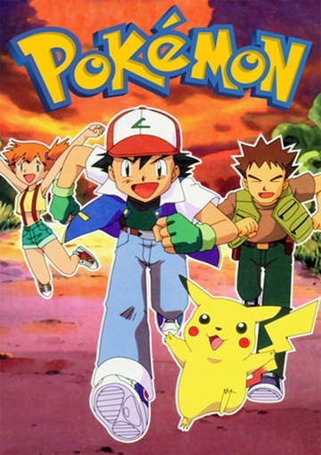

O desenho acompanha a jornada de Ash Ketchum, um corajoso garoto da cidade de Pallet, que sonha se tornar um Mestre Pokémon. Ao completar 10 anos, ele finalmente pode pegar o seu primeiro Pokémon. O único restante é Pikachu, um teimoso Pokémon Elétrico que não gosta de ficar dentro da Pokebola - o compartimento destinado para armazenar pokémons. Apesar de um início turbulento, os dois iniciam uma leal amizade. Ao longo de sua jornada, Ash faz vários amigos e participa de grandes torneios, enquanto enfrenta a Equipe Rocket.